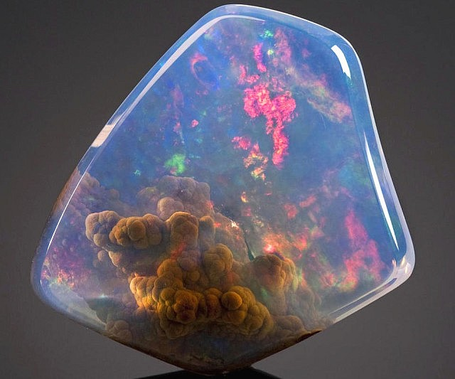

Opál
Opál je amorfný minerál, chemicky hydratovaný oxid kremičitý - SiO2·nH2O.
Opál je amorfný a má rôznorodý habitus --
môže byť celistvý, hroznovitý, obličkovitý, kvapľovitý, guľovitý,
hľuzovitý, prípadne môže vytvárať konkrécie. Drahý opál je
mliečnobiely alebo čierny a prekrásne hrá rozličnými dúhovými
farbami, zvyčajne červenou, modrou a žltou (opalizuje). So
zohrievaním vody, ktorá je v ňom viazaná, sa jeho farba často mení.
Napríklad ak sa drahý opál zohreje v dlani, bude sa mimoriadne
lesknúť. Ohnivý opál je žltý alebo červenkastý a môže, ale nemusí
opalizovať. Obyčajný opál je sivý, čierny alebo zelený a hrou farieb
sa nevyznačuje. Vryp opálu je biely. Tento minerál môže byť
priehľadný až nepriehľadný. Jeho lesk sa mení od skleného až po
smolný, mastný alebo perleťový, najčastejšie však býva sklený.
Opálovou hmotou býva niekedy fosilizované drevo, hovoríme o drevnom
opále. Formuje sa pri nízkych teplotách z vody bohatej na SiO2, a to
najmä v okolí horúcich prameňov.V ultrafialovom svetle opál často
fluoreskuje a je nerozpustný v kyselinách. Zohrievaním sa rozkladá,
stráca molekuly vody a môže sa zmeniť na kremeň- chalcedón. Ak je
vystavený dlhší čas pôsobeniu vzduchu, jeho štruktúra sa stáva
krehkou; príčinou tohto javu je strata vody a s tým súvisiaci vznik
prasklín.Častý v pyroklastikách slovenských neovulkanitov, v
andezitoch, tufoch, tufitoch, limnokvarcitoch ai. Herľany, Ponická
Huta (pri Banskej Bystrici), Svätý Anton (bývalý Antol pri Banskej
Štiavnici), Krupina, Šášovské Podhradie, Dubník (pri Červenici).
 
Drahy Opal
Sklenny Opal
Mliecny Opal